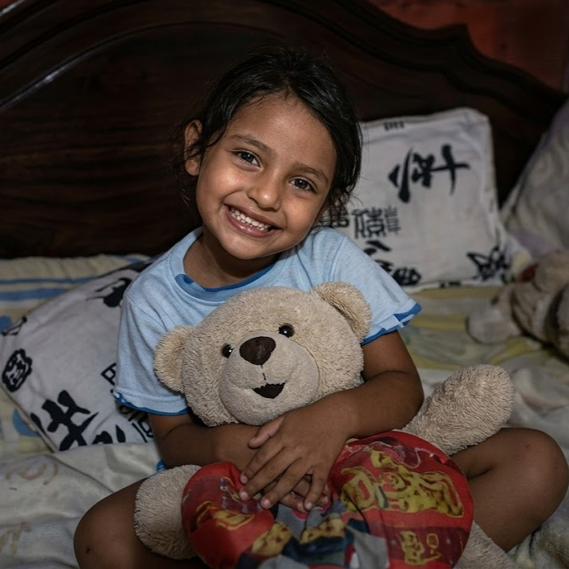
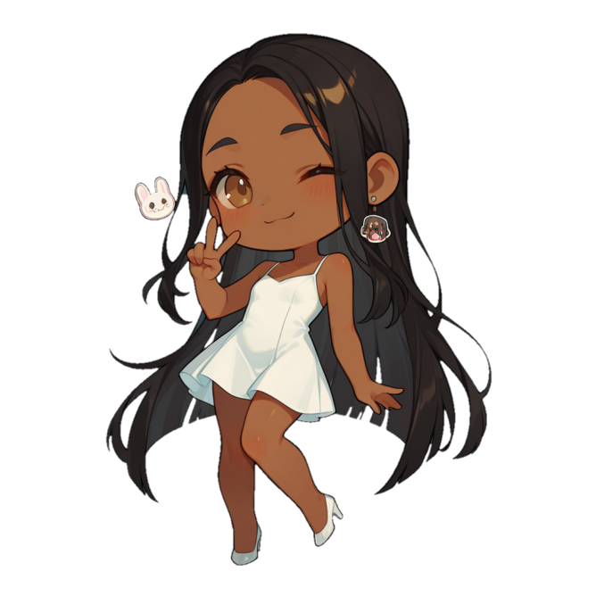
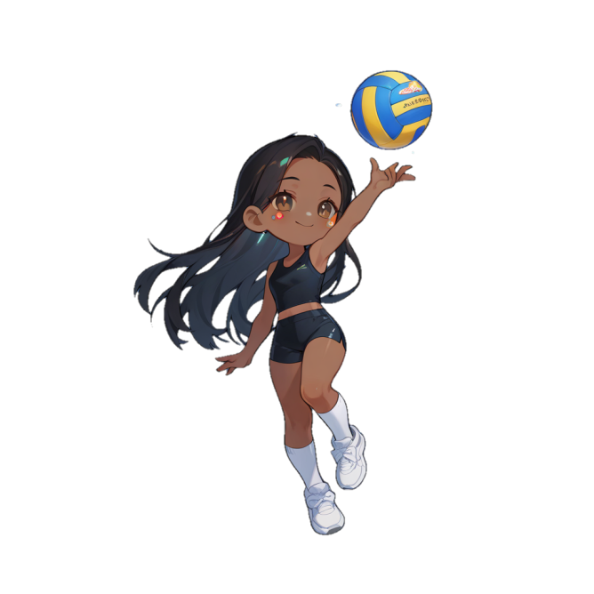
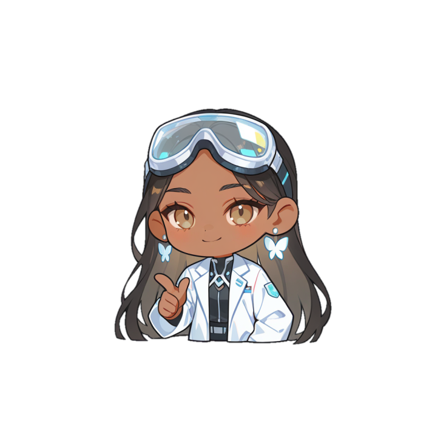
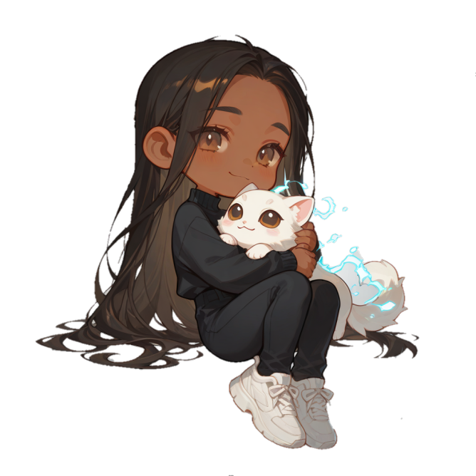
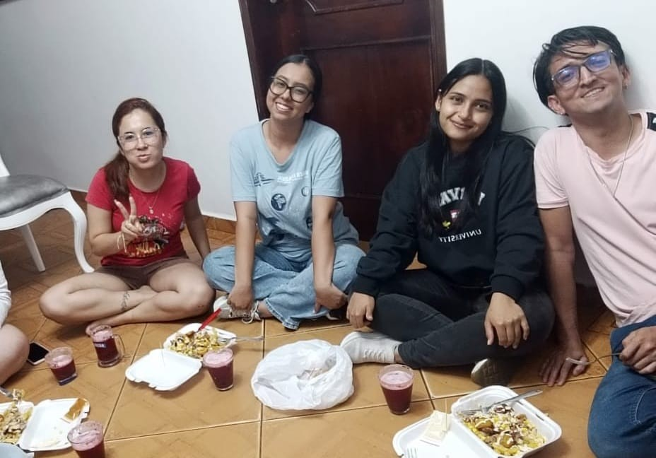
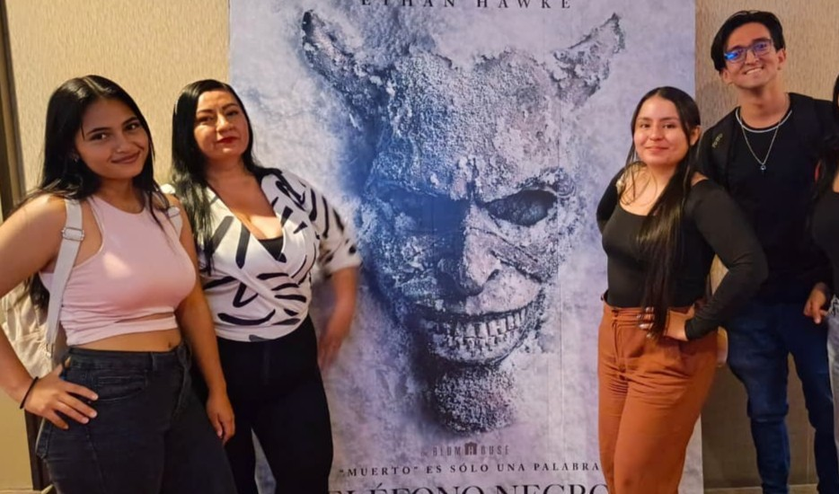
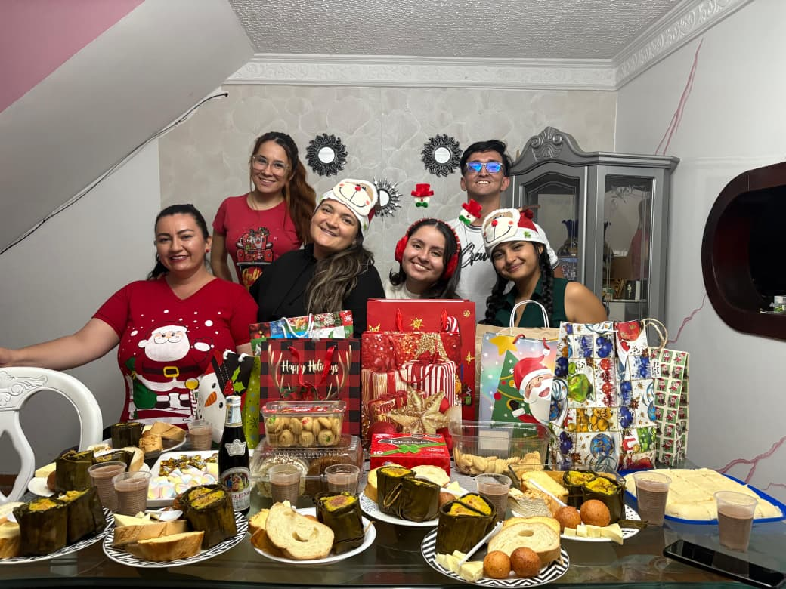
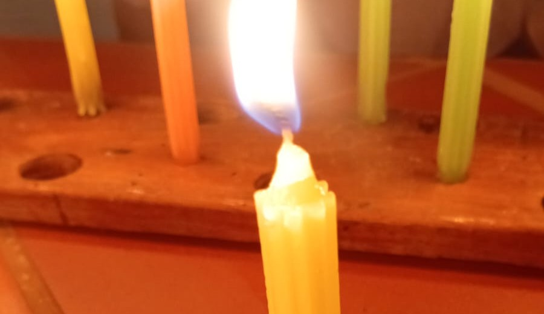

Acerca de Camila

La Chawalita
Filomena de los Reyes, una personita unica y especial en el mundo, que aunque ella no se de cuenta y tal vez no lo considere así, definitivamente sabe hacerse con un espacio en el corazón de las personas que la rodean, por su forma de ser, por sus ocurrencias, y su gran disposición para ayudar a los demas, Filomena, o Camila Arguello definitivamente es muy importante para muchas personas, especialmente para su compañerito random de la chamba, Miguel Ortiz, que la quiere mushio.

❤ Personalidad
Camila cuenta con una personalidad increible, me mantengo diciendo lo de siempre, que, vista desde lejos parece ser una especie de señorita super criticona y bien mala gente, aunque es mentira, no hace falta mucho tiempo de hablar con ella para darse cuenta que es todo lo contrario, suele ser muy amable, empatica y que se preocupa por los demas, esforzandose siempre en cumplir con sus responsabilidades y de claro, haciendo unos chistecitos para hacer reir a la gente.

🎵 Gustos
Una vez, equivocadamente la fune, y claro, me arrepiento de ello, esa frase de "¿tienes algun gusto que no sea influenciado por alguien más?", pido perdon, con el tiempo me di cuenta que realmente tiene un excelente gusto para todo, la comida, los pasatiempos, la musica, las peliculas, todo lo que suele recomendar es muy entretenido y agradable, ademas, es una #MangoLover, En efeco, tiene buen guso para todo (Menos pa los mushashos, esos si me caen mal).

✨ Curiosidades
Camila tiene varios apodos, entre los cuales estan: Filomena, Patroncita, Gaticornia, Chaparrita, Chiquitica, Chaparritamorenitadivina y Chawalita. Tambien Le gusta muxio el Mango y las Fresas y el Helado y Las Pastas y Los Gatos y cositas asi, sisisis. Siempre se la pasa funando a un pobre muchachito inocente (yo).

📸 Recuerdos
A pesar del tiempo, la distancia y los momentos emos, hay un muchos momentos y experiencias vividas, las cuales, aunque seria tecnicamente imposible mencionarlas todas, cada momento hace un bonito recuerdo y hace que el cariño Y aprecio que se le tiene sea cada vez mayor.
Nuestros Inicios

Primer Foto Juntos
27 de SeptiembreAunque ya llevabamos un tiempo hablando, Y aunque era en grupo, esta fue la primer Foto en la que saliamos juntos, y tambien la primera comida comaprtida, que claro, fuimos derrotados y nos quedo la mitad jasjajsja
Primera Momento Emo
21 de OctubreComo claramente toda historia buena Debe empezar con algo malo, a menos de un mes de la primer foto, ya habia llegado el primer momento emo de Camila y que claramente me odiaba. Todo por una mini peleita de ego juasjuasjuas siendo beffita de Alicia.


Un dia especial y "despedida"
29 de NoviembreSi, aunque era otra reunion de chamnba, a partir de ese dia todo empezo a ser diferente, sentir esa "conexión" con alguien y aquel pequeño gesto que me hizo abrir los ojos y ver todo de otra manera. Llegando tambien la despedida de vacaciones, dando tambien origen al famoso traumita del "yo si queria dormir con ud".
Una velita
7 de DiciembreHabian pasado unos dias, seguiamos hablando por wasa, y aunque tenia todas las razones suficientes para odiarme y funarme por lo del cumpleaños, felizmente eligio el camino de la amista :3 y me encendio una velita, ma lindaaa


Primera salidita juntos
21 de EneroY ahora si, luego de muxio tiempo (las vacaciones jsjs) volvio a Bucaramanguita y fuimos a dar una vueltica, obvio, afanaooooooos pq a la muchachia le salio partido de volley jajsjajsa, pero bueno, muy top la velda. Y a partir de ahí, todo fue cada vez más wonito....